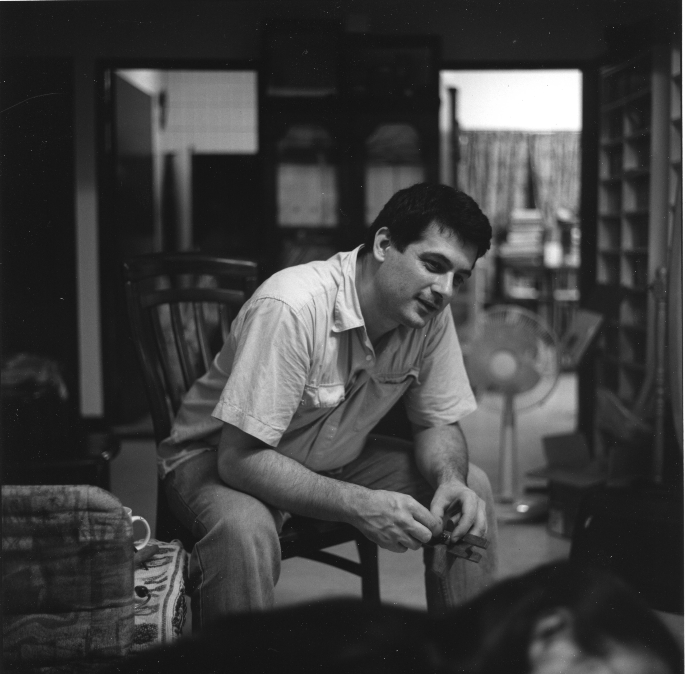
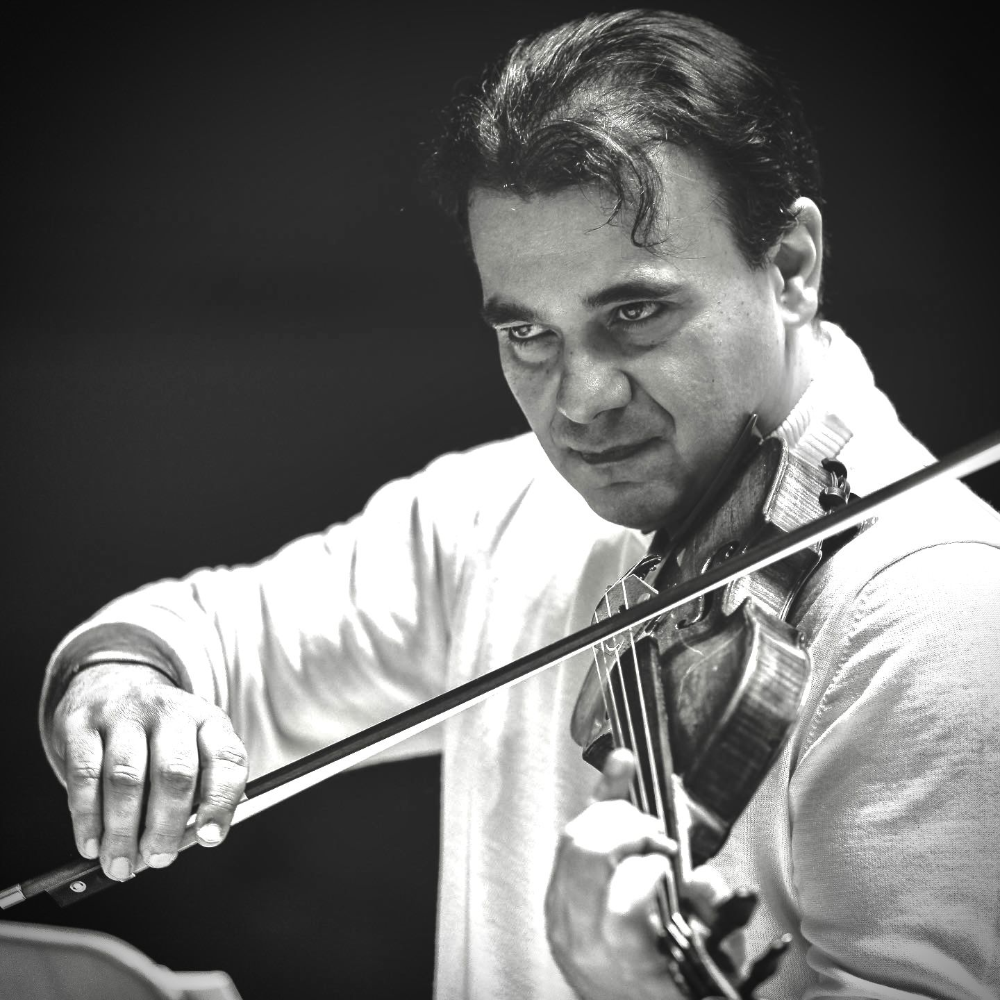
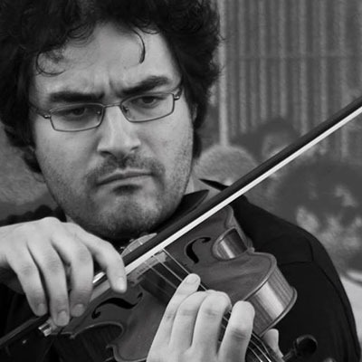
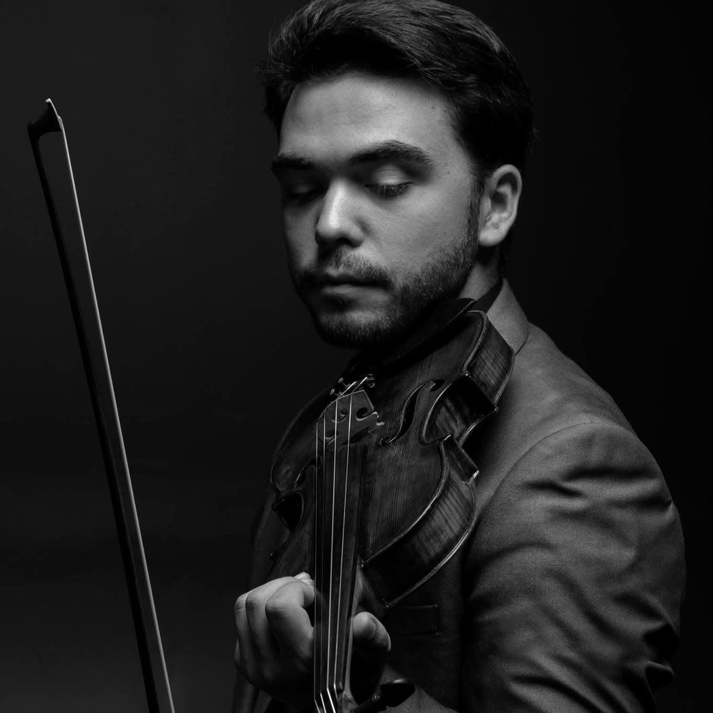

Violin Maker | faiseur d'instruments
Luthier · France
Handcrafted violins violas and cellos, born from decades of devotion to the art of lutherie — from Paris to Southeast Asia to the heart of Lorraine.

About me
I was born in 1966 in former Yugoslavia, and began my musical journey playing the violin and the viola. While pursuing my university studies, my consuming love and passion for the violin compelled me to embark on the road of Lutherie and Violin Making.
This journey commenced with my former violin teacher, and later, under the apprenticeship of the great master luthier Lendjel Laslo (Lengyel László) in Paris.
I have had the honour of serving professional performing musicians, aspiring talents, and avid music and violin-lovers in Asia — Taiwan, Singapore, Malaysia and Indonesia — for 20 years. I had the privilege to make new instruments for these musicians, as well as to assist them with sound adjustments, maintenance, repair and upkeep, and adapting their instruments to the unique conditions of Southeast Asia.
My work later brought me to Mirecourt, France, where I continued my work for several years. I am now based in Fraisnes-en-Saintois.
"Through his skill, even a simple wood is transformed into extraordinary music."
What People Say
After playing several of his violins, I can say with certainty that through his skill, even a simple wood is transformed into extraordinary music. His artistry as a luthier is a true reflection of his passion and dedication to every instrument he creates.

Gabor Szabo
Concertmaster, Madrid Soloists Chamber Orchestra
The violins crafted by Istvan's hands are true masterpieces, where art and technical perfection converge. Each instrument unveils a rich and profound palette of colors, allowing the performer to explore an infinite world of nuances and subtleties.

Marcos Lázaro
Violinist & Teacher, Gregorian Institute of Lisbon
I've had the pleasure of playing and working with István's handcrafted violins, and I can confidently say that they are truly exceptional instruments. The level of craftsmanship and attention to detail is reminiscent of the old Italian masters.

Roman Kholmatov
Associate Concertmaster, Orquesta de la Comunitat Valenciana
Get in touch
Phone
+33 6 14 61 71 46Address
1bis Rue des Grandes Haies
54930 Fraisnes en Saintois
France